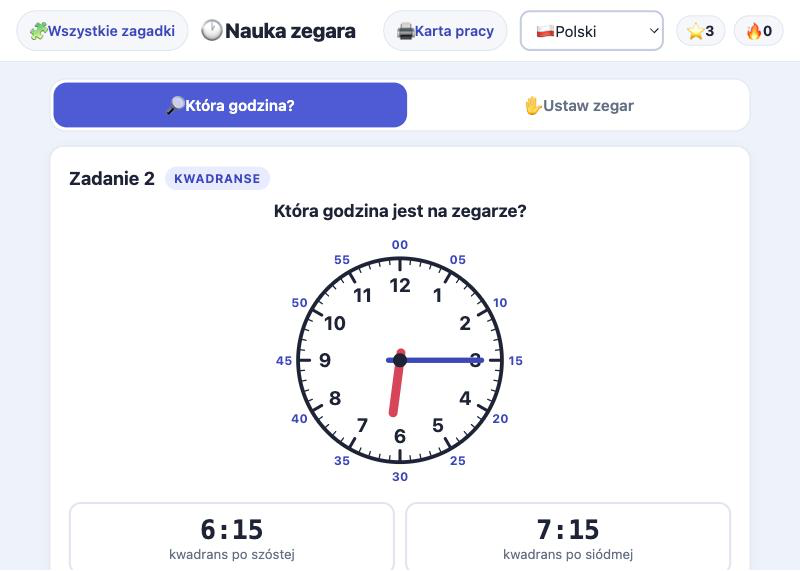
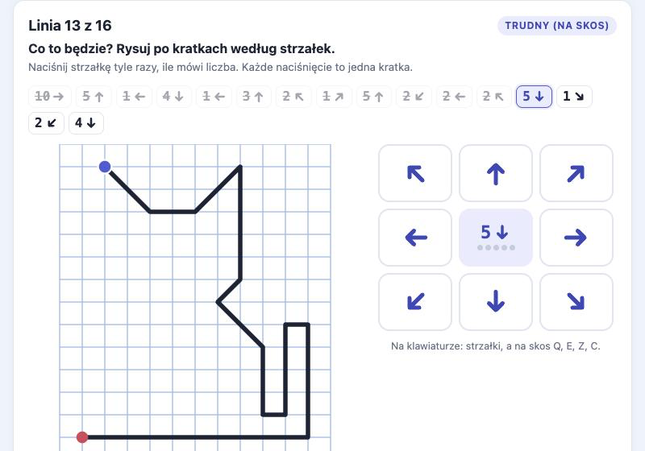
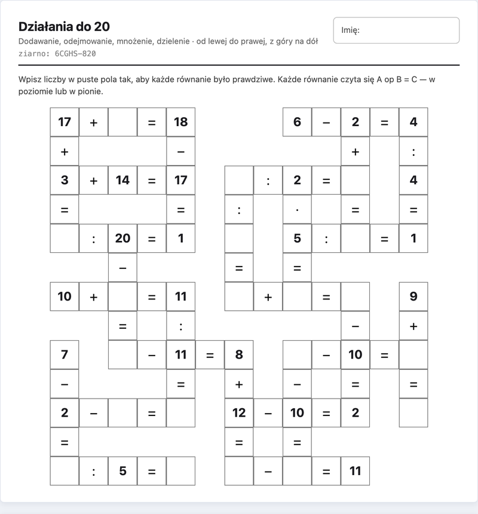
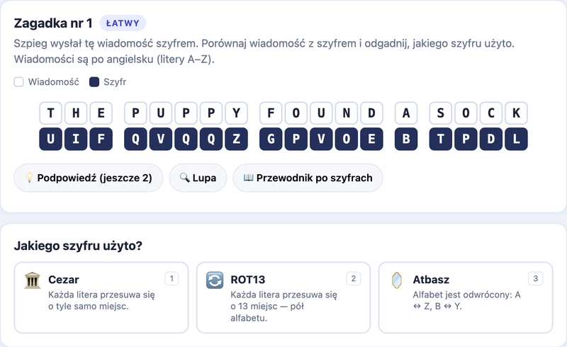
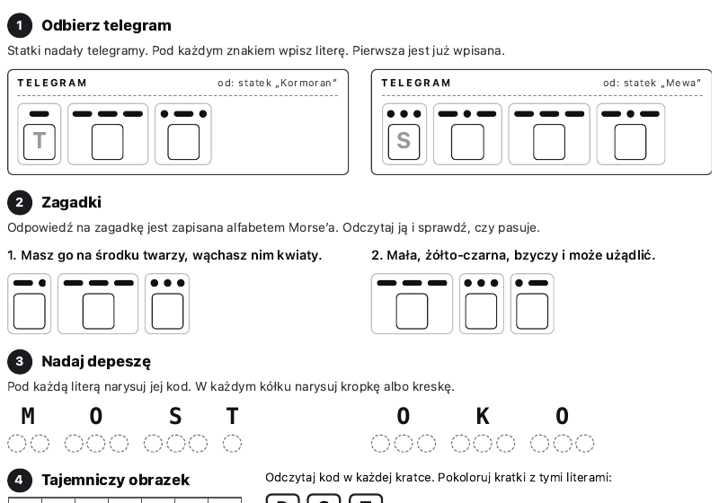
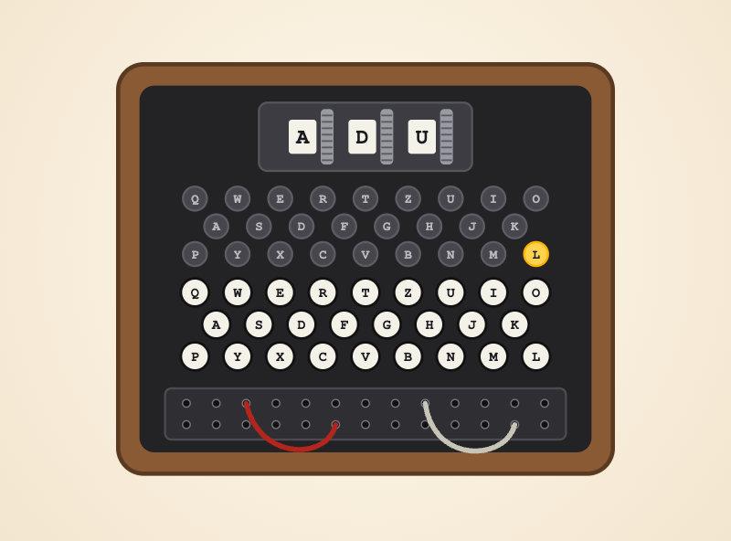
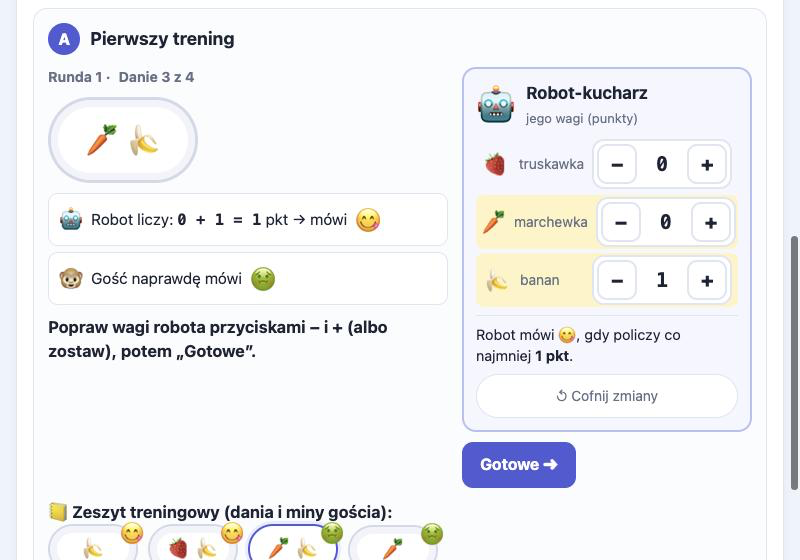

Nauka zegara
Zegar ze wskazówkami: odczytaj, która godzina, albo przeciągnij wskazówki i ustaw zegar. Od pełnych godzin i „wpół do” przez kwadranse aż po każdą minutę, także w zapisie 24-godzinnym. Karty pracy do druku z rozwiązaniami.

Zegar ze wskazówkami: odczytaj, która godzina, albo przeciągnij wskazówki i ustaw zegar. Od pełnych godzin i „wpół do” przez kwadranse aż po każdą minutę, także w zapisie 24-godzinnym. Karty pracy do druku z rozwiązaniami.

Rysuj po kratkach według strzałek: 3 w prawo, 2 w górę… i odkryj, jaki wyjdzie obrazek. Trzy poziomy, na trudnym także linie na skos. Zamiast liczb mogą być działania (2+1, 6:2), więc to też ćwiczenie z liczenia. Do wyboru także motywy religijne: krzyż, kościół, anioł… Karty pracy do druku z rozwiązaniem.

Krzyżówki z działaniami do wydruku: każde równanie czyta się w poziomie i w pionie, a liczby łączą się na skrzyżowaniach. Wybierasz zakres liczb i działania, dostajesz kartę pracy razem z rozwiązaniem.

Szpieg wysłał wiadomość szyfrem. Porównaj ją z zaszyfrowaną wersją i odgadnij, jakiego szyfru użył: Cezara, ROT13, Atbasz, a na trudnym poziomie także Vigenère'a, afinicznego i Beauforta. Albo znasz szyfr Cezara i szukasz przesunięcia. Dla dzieci w wieku 8–12 lat.


Sześć misji, online i do wydruku: szyfr Cezara, pomieszany alfabet, liczenie ustawień, a na koniec własna Enigma z papieru, z kręcącym się kołem i lustrem. Jak Marian Rejewski, który złamał Enigmę w 1932 roku. Dla dzieci w wieku 8–10 lat.

Wszystko tu jest za darmo i nie trzeba zakładać konta. Tak już zostanie.
Masz sugestię albo widzisz błąd? Napisz do mnie: michal.anatol.skora@gmail.com